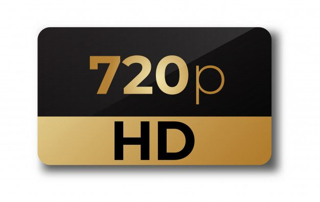

RESOLUCIÓN
1. HD (720p)
- Resolución: 1280 x 720 píxels
- Calidad: Básica, suficiente para pantallas pequeñas o transmisiones de televisión estándar.

2. Full HD (1080p)
- Resolución: 1920 x 1080 píxeles
- Calidad: Alta definición completa, adecuada para la mayoría de los contenidos y
suficiente para pantallas medianas o grandes.
3. 4K UHD (2160p)
- Resolución: 3840 x 2160 píxeles
- Calidad: Muy detallada, ideal para televisores grandes y contenido en alta calidad.
Actualmente es el estándar en televisores modernos.
4. 8K UHD
- Resolución: 7680 x 4320 píxeles
- Calidad: Ultra alta definición, con cuatro veces más píxeles que el 4K. Ideal para pantallas de gran tamaño y
contenido específico en 8K (aunque aún es limitado).
5. Resoluciones intermedias
- 2K (1440p): Resolución común en monitores de computadora y algunos modelos de televisores más antiguos,
con una resolución de 2560 x 1440 píxeles.
- 5K y 6K: Pueden encontrarse en algunos monitores y pantallas profesionales,
aunque no son comunes en televisores de consumo.
-PAGINA INICIAL-